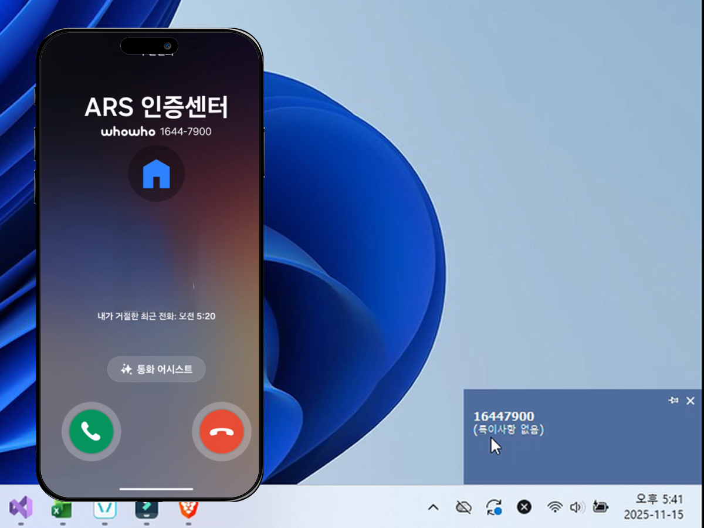
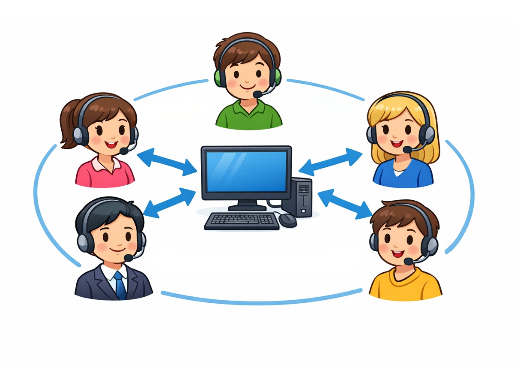
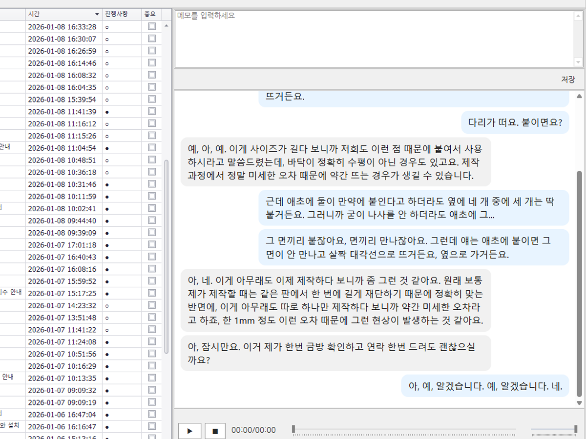
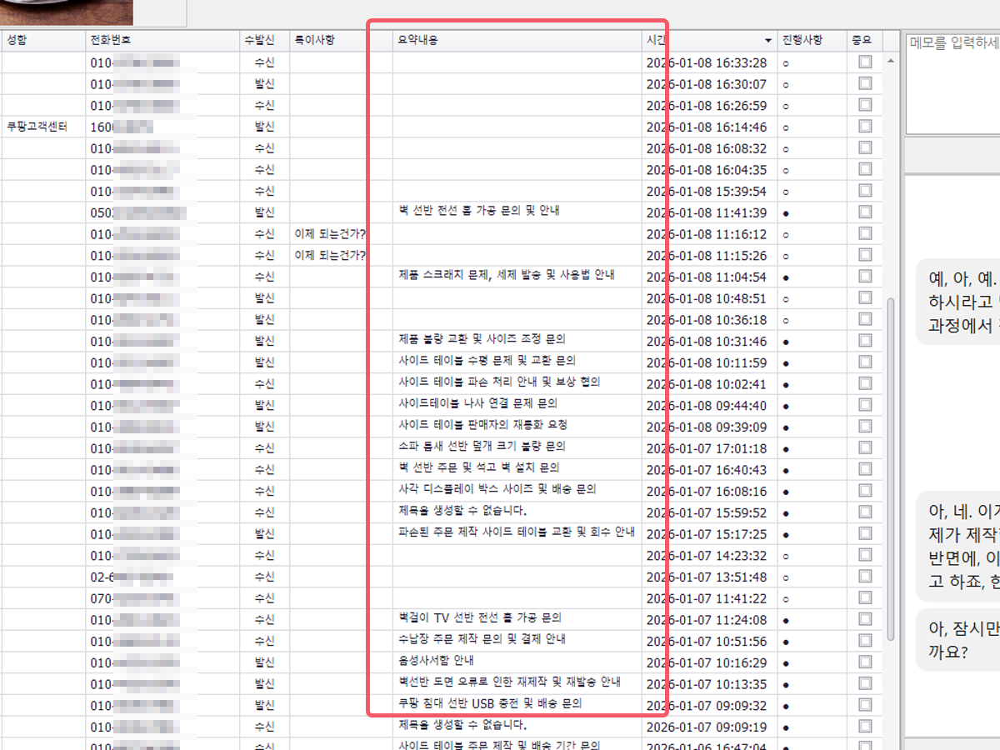

비싼 구축비용 없이, 사용 중인 스마트폰과 PC를 연결하세요.
실시간 알림, 상담 공유, AI 통화 요약까지 한 번에 해결됩니다.
실제 구동 화면을 통해 강력한 기능을 확인하세요.
전화가 울리는 순간, PC 화면 우측 하단에 고객 정보가 즉시 팝업됩니다.
통화와 동시에 메모를 남기세요. 저장된 메모는 다음 상담 때 자동으로 표시됩니다.


최대 5명의 상담원이 하나의 팀처럼 움직입니다.
누가 통화 중인지, 어떤 상담을 했는지 실시간으로 동기화되어 효율적인 협업이 가능합니다.
통화 녹음 내용을 일일이 듣지 마세요.
고성능 STT 엔진이 통화 내용을 텍스트로 자동 변환합니다. 눈으로 읽고 검색할 수 있습니다.


긴 통화 내용의 핵심만 파악하고 싶으신가요?
AI가 전체 대화를 분석하여 핵심 내용을 3줄로 요약해 드립니다. 업무 파악 시간이 획기적으로 단축됩니다.
일반 사무실 전화를 스마트폰으로 착신 전환만 하세요.
어디서든 전화 응대가 가능하고, 모든 기록은 사무실 PC에 차곡차곡 쌓입니다.